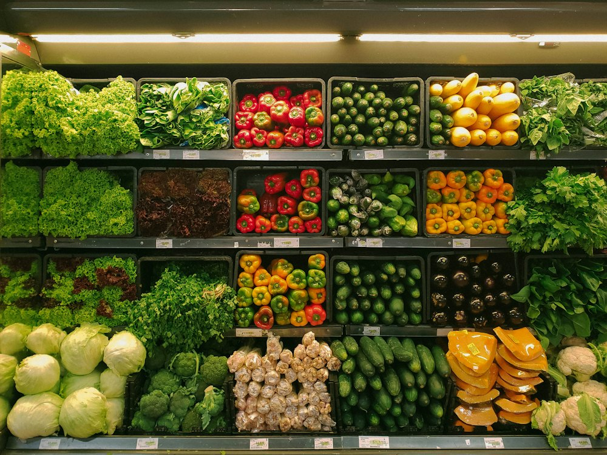

Magnum Cash & Carry · Аксуат
Магазин · Супермаркет · Алматы
Рейтинг 2ГИС
★ 4.5
5 900 оценок
Год открытия
2007
сеть Magnum основана в сентябре 2007 г., первый магазин открыт в Алматы
Средний чек
≈6 000 ₸
оценка по типу заведения
Адрес и часы
📍 ул. Аксуат, 128, Алматы · Жетысуский район
🕒 часы работы уточняются — смотрите в 2ГИС
О заведении
Супермаркет сети Magnum.
Популярные товары
Рядом в справочнике
Lапша Bar & Wok · Mad Murphy's Irish Pub · Mado · Magnum Hyper · Жетысу-3 · Magnum Hyper · Хан Шатыр · Mai Qazan